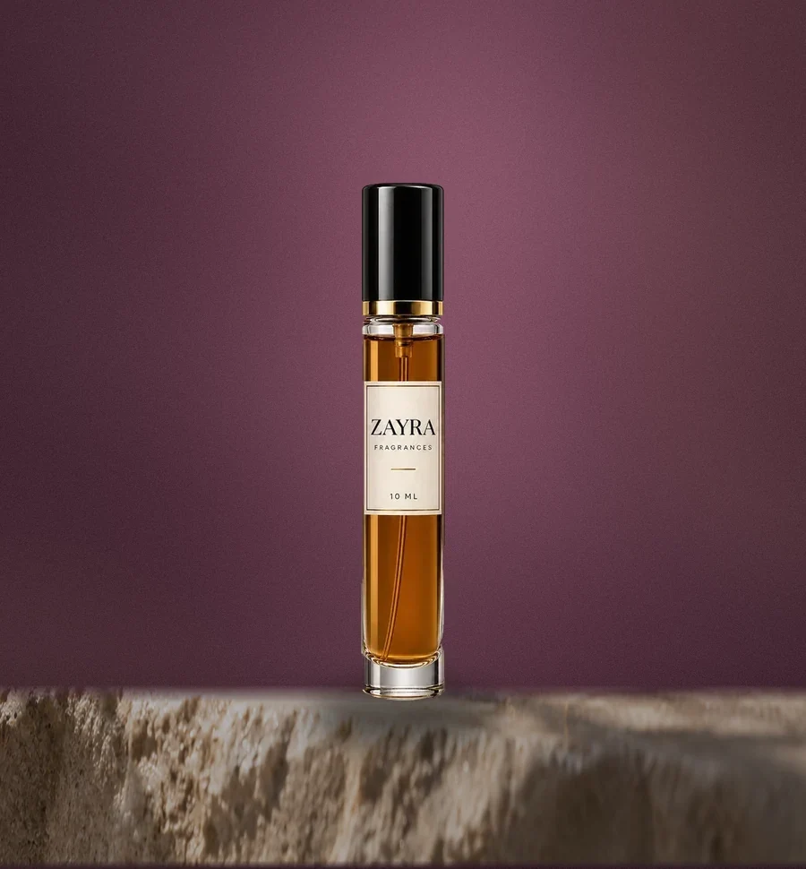

الصورة للتعريف، والديكانت هو المنتج.
القارورة الكبيرة قد تُعرض لتعريف العطر فقط. ما تشتريه هو بخاخ سفر من 10 مل. كل الصور المعروضة توضيحية إلى حين اعتماد الصور التجارية النهائية.

اختار الطريقة المناسبة لتجربة العطر.

نصائح الاستخدام والحفاظ.
نصائح بسيطة للتمتع بعطرك.
01
احتفظ بالبخاخ بعيداً عن الحرارة والشمس المباشرة.
02
جرب الرائحة في مناسبات مختلفة قبل اتخاذ القرار.
03
احرص على إغلاق البخاخ واحمله بشكل آمن.
أسئلة سريعة
هل ديكانت 10 مل هو الحجم الوحيد؟
نعم، كل المنتجات الفردية على الموقع بصيغة 10 مل.
هل القوارير الكبيرة ضمن الطلب؟
لا، لا تُباع القوارير الكبيرة على هذا المتجر.
كيف يتم تأكيد الطلب؟
تقوم بتحضير السلة وتنتظر تأكيد توفر المنتجات والتوصيل.